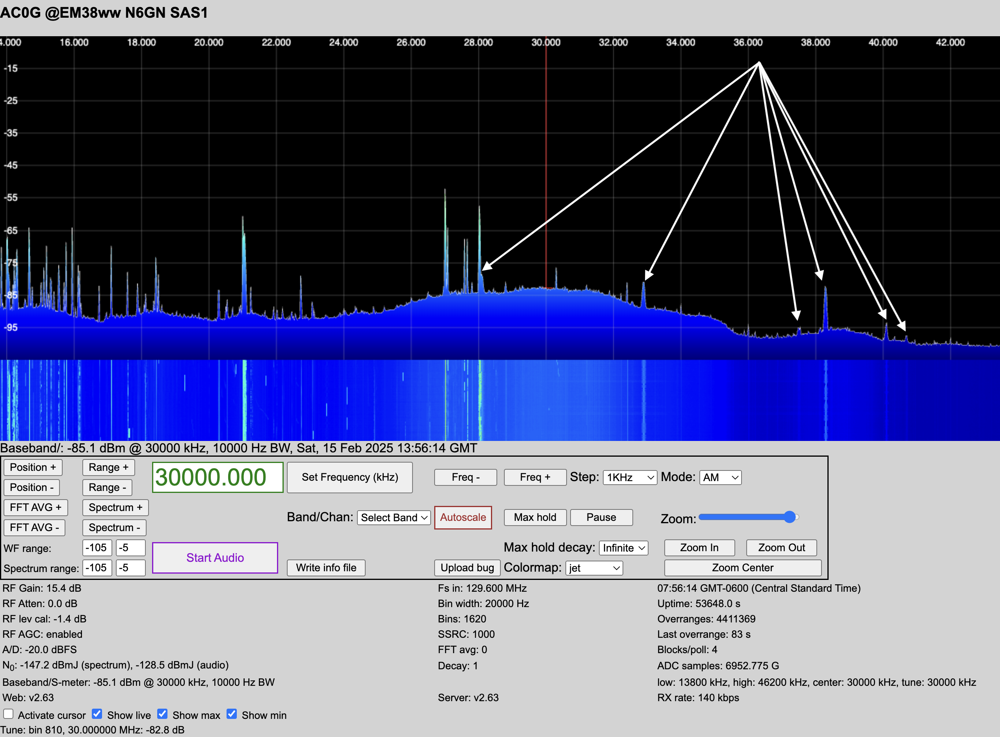

Case Study 6: Suspected FM Broadcast Station Interference
Symptom:
Unusual spikes or patterns appear on the spectrum display at unexpected frequencies, often in the VHF range (above 30 MHz) but sometimes in HF bands as well.
The artifacts increase in intensity when pointing a directional antenna toward a known FM broadcast tower.
The SDR’s front-end overloads, causing broad, unpredictable interference across the spectrum.

28.1 MHz <– 101.5 FM
32.9 MHz <– 96.7 FM
37.5 MHz <– 93.9 FM
38.3 MHz <– 91.3 FM
40.1 MHz <– 89.5 FM
40.7 MHz <– 88.9 FM
Step 1: Identify Artifacts from FM Broadcast Stations
FM broadcast stations operate in the 88–108 MHz range and are high-power transmitters (often tens or hundreds of kilowatts ERP). If they are interfering with your SDR, you might observe:
Harmonics & Mixing Products
Some FM transmitters generate harmonics, appearing at multiples of their fundamental frequency (e.g., a 100 MHz station producing harmonics at 200, 300 MHz).
If your SDR has weak front-end filtering, mixing products from FM stations can appear in unexpected places.
Intermodulation Distortion (IMD)
If multiple FM stations are strong at your location, their signals can mix inside the SDR or a nearby nonlinear junction (e.g., corroded metal connections), generating sum and difference frequencies that may appear in the HF spectrum. Example: Two FM stations at 88.5 MHz and 99.5 MHz could produce an intermodulation product at:
\(99.5 - 88.5 = 11 \text{ MHz} \quad \text{(inside HF range)}\)
Aliasing (Due to SDR Sampling Rate Limits)
If the sampling rate of your SDR is lower than twice the frequency of incoming signals (Nyquist criterion violation), FM signals may “fold over” into your spectrum.
Example: If your SDR has a 2.048 MSPS sampling rate, any signal above 1.024 MHz (half the sampling rate) may alias into the displayed spectrum.
Step 2: Investigate the SDR’s Sampling Rate and Front-End Behavior
Knowing the sampling rate helps predict aliasing behavior.
Wideband SDRs Have Higher Nyquist Limits
Airspy HF+ Discovery (6.144 MSPS): Aliasing above 3.072 MHz.
SDRplay RSPdx (10 MSPS): Aliasing above 5 MHz.
HackRF One (20 MSPS): Aliasing above 10 MHz.
LimeSDR Mini (30.72 MSPS): Aliasing above 15.36 MHz.
LimeSDR USB (61.44 MSPS): Aliasing above 30.72 MHz.
Ettus USRP B210 (up to 61.44 MSPS): Aliasing above 30.72 MHz.
Ettus USRP X310 (up to 129.6 MSPS): Aliasing above 64.8 MHz.
RX888 (64.8 or 129.6 MSPS): Aliasing above 32.4 or 64.8. MHz.
Check for Aliasing Boundaries
If you are running a 64.8 MSPS SDR, expect aliasing from signals above 32.4 MHz to fold back into your spectrum.
If FM broadcast signals (88–108 MHz) alias into your HF display, the sampling rate is likely too low, or strong signals are overloading the SDR front end.
Check for Front-End Overload
Some SDRs lack front-end band-pass filtering, allowing strong local FM signals to cause desensitization or intermodulation distortion across the spectrum.
Try reducing gain settings in your SDR software to see if the artifacts reduce.
Step 3: Verify the FM Source
To confirm that local FM stations are the problem:
Use a Band-Pass Filter for HF
Insert a high-pass or band-pass filter before the SDR to block VHF signals from reaching the front end.
If FM interference disappears, it was likely front-end overload.
Listen in WFM Mode
Tune your SDR to 88–108 MHz and listen in wideband FM mode. -Identify strong signals and note the most powerful stations.
Check for Mix Products Using a Second SDR
If you have another receiver, use it to check if the same artifacts appear.
If only one receiver is affected, the issue is likely internal to that SDR (aliasing, overload, or poor filtering).
Step 4: Mitigation Techniques
Once you confirm that FM broadcast stations are interfering, try the following solutions:
Use a Broadcast Band Notch Filter
A notch filter for 88–108 MHz can prevent FM signals from overloading the SDR.
These are available as commercial filters (e.g., RTL-SDR Blog FM Notch, Nooelec Flamingo+ FM) or DIY tuned circuits.
Reduce SDR Gain
Lowering gain settings can reduce overload distortion without significantly affecting HF signals.
Use a Better Antenna Setup
If using an active preamp, place an FM trap filter before the amplifier.
Reorient antennas to minimize pickup of nearby broadcast stations.
Improve SDR Shielding
Some SDRs (like cheap RTL-SDR dongles) lack proper shielding, allowing strong RF to leak into the circuit.
Using a metal enclosure or a better-shielded SDR (e.g., Airspy HF+, SDRplay RSPdx) can help.
Conclusion
By knowing your SDR’s sampling rate, gain settings, and front-end behavior, you can determine whether FM signals are causing harmonics, mixing products, intermodulation, or aliasing. For wideband SDRs like the RX888 (129.6 MSPS or 64.8 MSPS), aliasing occurs above 64.8 MHz or 32.4 MHz, respectively. You may also find aliases at the sampling rate - broadcast frequency, i.e., between \((129.6 - 108) = 21.6 MHz\) and \((129.6 - 88) = 41.6 MHz\). Filtering, shielding, and adjusting gain are the primary ways to mitigate these unwanted effects.